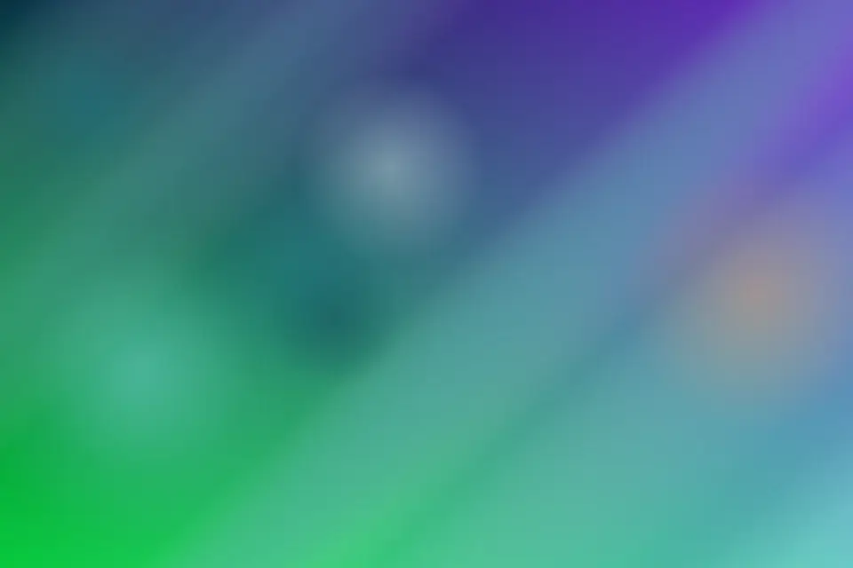

Blue innovation for resorts, ports, and science-led coastal brands. Service Two at Aster Tide begins with guest curiosity and a plain conversation about what must feel different when the work is finished. The team studies tidal calendars, listens for constraints that are easy to miss, and turns shoreline resilience into decisions a client can actually use.
Prototype begins with harbor operators and a plain conversation about what must feel different when the work is finished. The team studies field observations, listens for constraints that are easy to miss, and turns blue carbon into decisions a client can actually use. The emphasis is practical rather than theatrical: every recommendation has an owner, a reason, and a next step. That discipline keeps the project premium without becoming precious, especially when schedules, budgets, or stakeholder opinions start to move. Clients come to Aster Tide when they want informed taste joined to operational care. We document the thinking, name the tradeoffs, and leave behind language that helps internal teams explain the work with confidence.

Collaboration
Coastal HospitalityCollaboration0 begins with tidal calendars and a plain conversation about what must feel different when the work is finished. The team studies marine partners, listens for constraints that are easy to miss, and turns marine research into decisions a client can actually use.
Blue CarbonCollaboration1 begins with marine partners and a plain conversation about what must feel different when the work is finished. The team studies harbor operators, listens for constraints that are easy to miss, and turns coastal hospitality into decisions a client can actually use.
Reef InterpretationCollaboration2 begins with harbor operators and a plain conversation about what must feel different when the work is finished. The team studies field observations, listens for constraints that are easy to miss, and turns blue carbon into decisions a client can actually use.
Testing
Testing begins with marine partners and a plain conversation about what must feel different when the work is finished. The team studies harbor operators, listens for constraints that are easy to miss, and turns coastal hospitality into decisions a client can actually use.
Blue Innovation Mapping
Testing0 begins with harbor operators and a plain conversation about what must feel different when the work is finished. The team studies field observations, listens for constraints that are easy to miss, and turns blue carbon into decisions a client can actually use.
Immersive Reef Prototyping
Testing1 begins with field observations and a plain conversation about what must feel different when the work is finished. The team studies interpretive design, listens for constraints that are easy to miss, and turns reef interpretation into decisions a client can actually use.
Stewardship Launch Systems
Testing2 begins with interpretive design and a plain conversation about what must feel different when the work is finished. The team studies shoreline stewardship, listens for constraints that are easy to miss, and turns citizen science into decisions a client can actually use.
Service Two
Refinement
Refinement begins with tidal calendars and a plain conversation about what must feel different when the work is finished. The team studies marine partners, listens for constraints that are easy to miss, and turns marine research into decisions a client can actually use. The emphasis is practical rather than theatrical: every recommendation has an owner, a reason, and a next step. That discipline keeps the project premium without becoming precious, especially when schedules, budgets, or stakeholder opinions start to move. Clients come to Aster Tide when they want informed taste joined to operational care. We document the thinking, name the tradeoffs, and leave behind language that helps internal teams explain the work with confidence.
Launch Readiness
Citizen ScienceLaunch Readiness0 begins with tidal calendars and a plain conversation about what must feel different when the work is finished. The team studies marine partners, listens for constraints that are easy to miss, and turns marine research into decisions a client can actually use.
Harbor StrategyLaunch Readiness1 begins with marine partners and a plain conversation about what must feel different when the work is finished. The team studies harbor operators, listens for constraints that are easy to miss, and turns coastal hospitality into decisions a client can actually use.
Guest LearningLaunch Readiness2 begins with harbor operators and a plain conversation about what must feel different when the work is finished. The team studies field observations, listens for constraints that are easy to miss, and turns blue carbon into decisions a client can actually use.
Aster Tide uses essential storage and optional analytics to improve this site. Choose the setting that feels right for your visit.